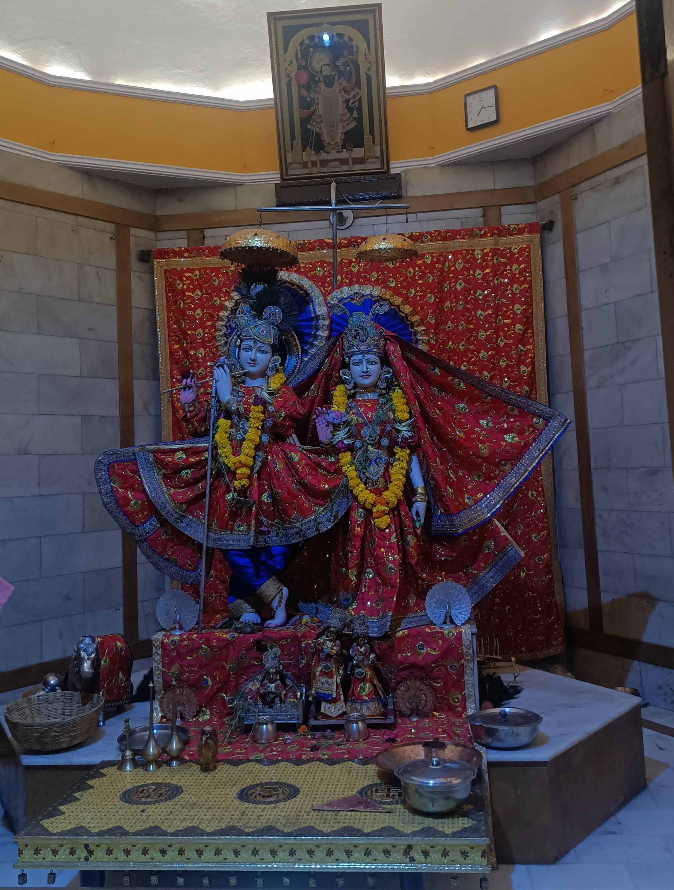
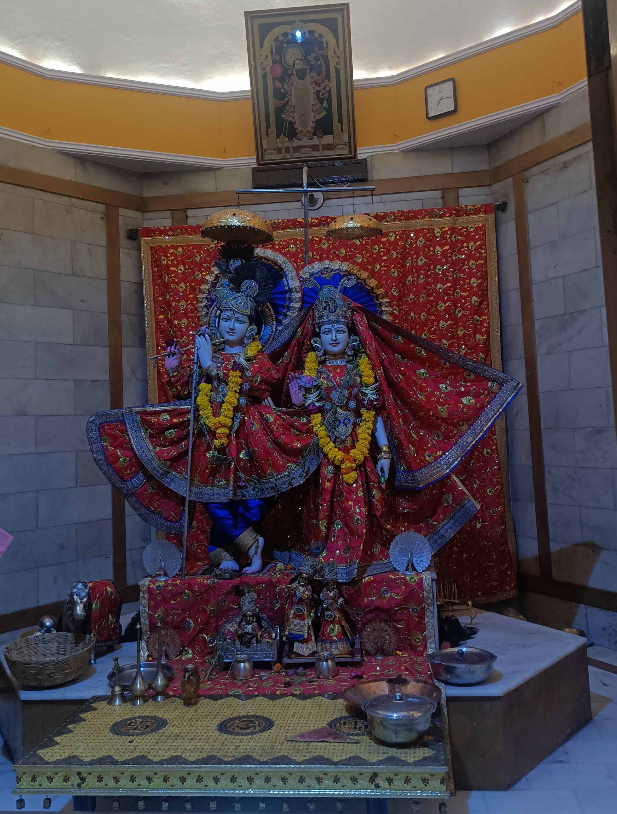

Radha and Krishna, a famous pair in Hindu stories, represent never-ending love and spirituality. Their beautiful story has touched millions of people worldwide. Rooted in old stories and beliefs, their tale continues to inspire those seeking love and wisdom. In this article, we'll dive into their fascinating lives and the valuable lessons they teach us about love and spirituality.
Radha Krishna Divine Love Story
The love story of Radha and Krishna is one of the most celebrated and cherished tales in Hindu mythology and literature. It symbolizes the divine union of the individual soul (Atma) with the universal consciousness (Paramatma), representing the highest form of love and devotion.
According to Hindu scriptures like the Bhagavata Purana, Radha was a cowherd girl in Vrindavan, a village in ancient India, and Krishna was a divine prince. Their love story unfolds amidst the pastoral settings of Vrindavan, where Krishna spent his early years as a cowherd. Radha, known for her unparalleled beauty, was deeply enamored with Krishna, and their love was pure, selfless, and eternal.
Their relationship is often depicted as the epitome of divine love, known as "Madhurya Bhava." Radha's love for Krishna is characterized by her complete surrender to him, transcending worldly desires and attachments. Their love is considered selfless and unconditional, devoid of any personal desires or expectations.
The bond between Radha and Krishna is often portrayed through various narratives, poems, songs, and artworks across different cultures. Their love is celebrated during festivals like Holi and Janmashtami, where devotees reenact their divine play (leela) through music, dance, and drama.
While their love story is deeply revered, it is also interpreted allegorically, symbolizing the union of the individual soul (Radha) with the Supreme Divine (Krishna). Radha represents the devotee's intense longing and love for the divine, while Krishna symbolizes the ultimate reality or God.
Regardless of interpretations, the love story of Radha and Krishna continues to inspire millions worldwide, emphasizing the power of love, devotion, and spiritual union.

 
